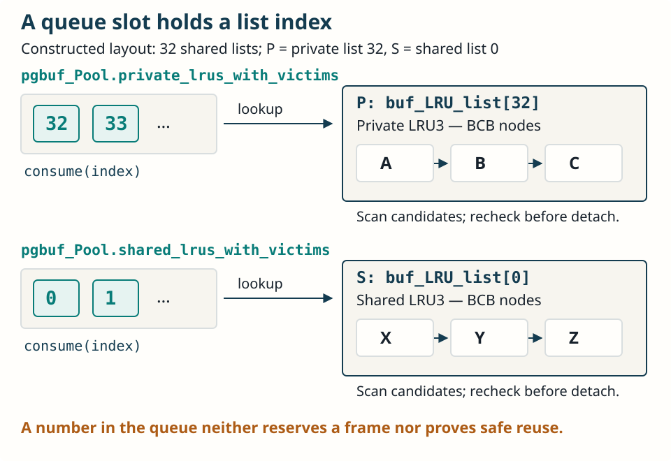
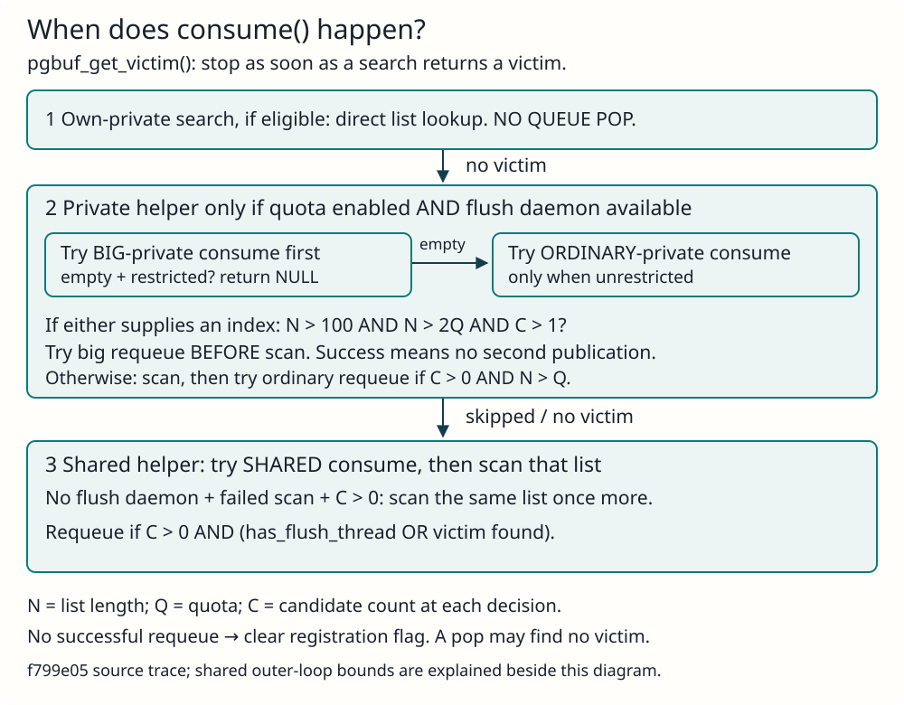
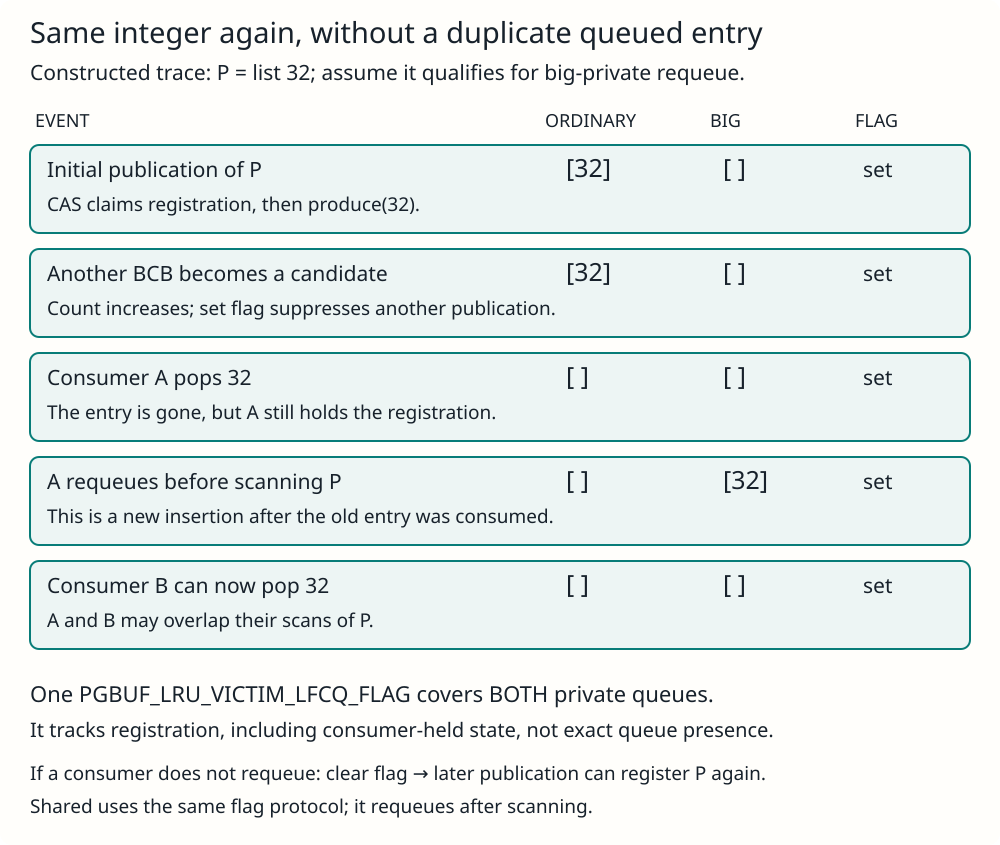
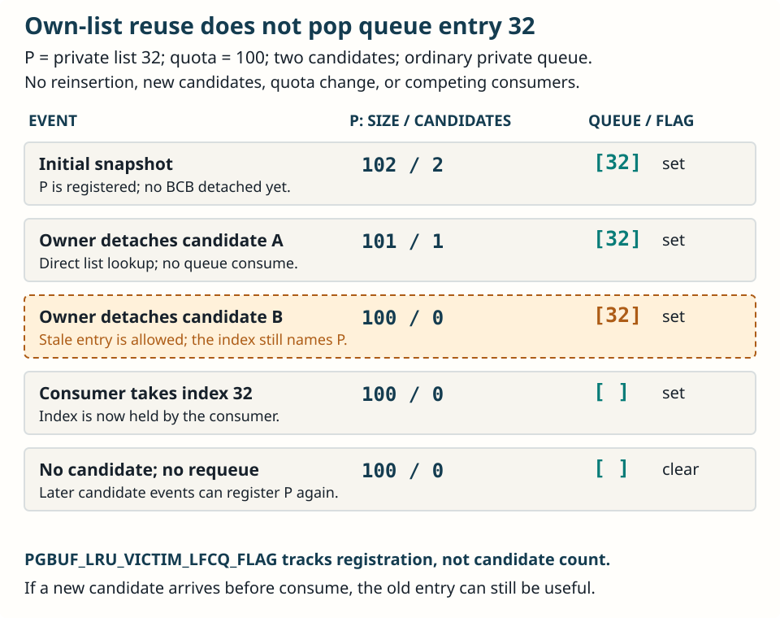
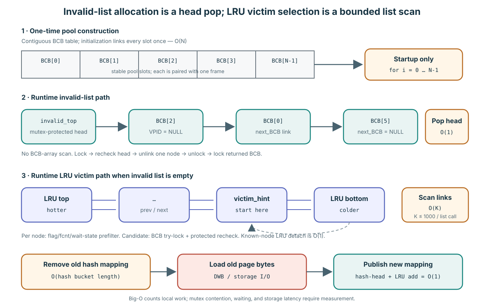
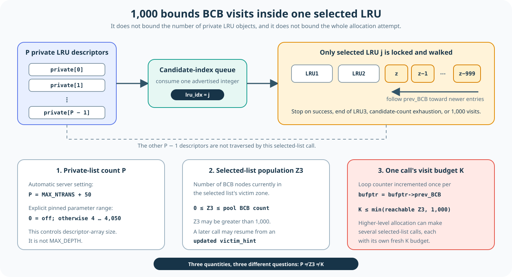

11. The pool is full: which list is searched first?
B requests S4, but it is absent from memory and the invalid list has no free frame. Loading S4 requires evicting an existing page and reusing its frame. Assume B has private list PB; PA is another session A’s private list. Both manage pages in the same buffer pool. Private membership does not grant exclusive access to a page.
The allocator first selects a list to search, then looks inside it for a reusable frame. It does not compare the ages of every page in the pool at once. If the selected list yields no safe candidate, the search moves to the next step.
① Does my own list PB qualify for the first search?
Quota is a policy reference for how many pages PB should retain. If PB exceeds it and has replacement candidates, the allocator searches its own list first: a caller retaining many pages first looks there for space for its next page. The exact initial condition is given in the source details below.
If PB is below quota, this first search is skipped. For example, with 80 pages in PB and a quota of 100, the allocator first seeks a frame elsewhere, giving PB room to grow. These numbers are a constructed example of the condition, not runtime measurements.
② How does it find another private list?
The exact queues are pgbuf_Pool.big_private_lrus_with_victims and pgbuf_Pool.private_lrus_with_victims. It checks the big-list queue first, then the ordinary queue when unrestricted. consume(lru_idx) supplies a list index for an LRU3 search; it does not guarantee a frame.
This stage runs when quota is enabled and the flush daemon is available. A substantially over-quota PB can restrict discovery to the big queue. Continue with the index-to-list diagram and the own-list reuse trace with a remaining queue entry.
③ If another private list yields no frame, try shared
The allocator consumes an index from pgbuf_Pool.shared_lrus_with_victims and searches that shared list. Queues identify lists to inspect; they do not sort all pool pages by age. Any successful stage returns its safe candidate immediately. The following private/shared queue-registration explanation explains how entries arrive.
④ If that also fails, search PB if it was skipped initially
Return to PB with 80 pages and a quota of 100. PB was skipped initially to preserve its allowance, but neither the other-private nor the shared step produced a frame. Continuing to exclude PB merely because it is below quota could prevent the new request from progressing even when PB contains a reusable page. The allocator therefore tries PB at the end. Quota does not guarantee that pages below this allowance can never be evicted.
This final search runs only if PB has not yet been searched during this pgbuf_get_victim() call. If the first step searched PB and failed, the final step does not search it again. Read this as “extend the search to the own list skipped initially.” If it also yields no candidate, the function returns failure and the caller continues its acquisition or waiting path.
Checkpoint: does being below quota exclude PB from the entire search?
No. It skips the first step, but PB is searched at the end if the other-private and shared steps yield no candidate. Its pages must still be checked for safe reuse in their current state. Quota-based preference and permission to reuse a frame are separate decisions.
Exact source conditions and exceptions
The initial PB search runs if LRU1 + LRU2 > quota, or if total list length > quota and count_vict_cand > 0. The function records that search in searched_own. The final search requires an own private list and !searched_own.
With ordinary quota enforcement, a failed initial PB search can set restrict_other when PB substantially exceeds quota. Other-private discovery checks big_private_lrus_with_victims first and can proceed to ordinary private_lrus_with_victims when unrestricted. Shared search still follows. An index consumed from the ordinary private queue can seed the big-private queue when it meets the size/candidate conditions. See the first-entry path and corrected VS-19. This search order is implementation policy, not a fairness or completion-time guarantee.
Source: pgbuf_get_victim() · List-number registration and private/shared queue search
Which queue, and what does its number mean?
Verified mechanism at f799e05. A list-index queue helps an allocator find an LRU worth searching without opening every list. Its element type is int; pages remain in their linked LRU lists. These queues are distinct from the direct-victim machinery that assigns BCBs to waiting threads.
In this independent constructed example, there are 32 shared lists. P names private list pgbuf_Pool.buf_LRU_list[32]; S names shared list pgbuf_Pool.buf_LRU_list[0]. Thus “P’s number” is the stored integer 32, not the letter P, a page ID, or a frame address. This is the full LRU index: private-domain index 0 maps to full index 32 in this layout.


| Exact field on pgbuf_Pool | Publication and use |
|---|---|
private_lrus_with_victims | Ordinary private discovery. Candidate addition or quota adjustment offers a list when it has candidates and its size exceeds quota. |
big_private_lrus_with_victims | Priority private discovery. A consumed private index can enter this queue before scanning when size > 100, size > 2 × quota, and candidate count > 1. |
shared_lrus_with_victims | Shared discovery. Candidate addition or quota adjustment offers a shared list with candidates; no private-style over-quota condition applies. |
Candidate additions call pgbuf_lru_add_victim_candidate(), then pgbuf_lfcq_add_lru_with_victims(). The latter uses CAS to set PGBUF_LRU_VICTIM_LFCQ_FLAG before produce(lru_list->index). An already-set flag prevents duplicate registration. Failed publication clears it. Quota adjustment also attempts registration for eligible lists, repairing missed advertisements; it does not flush pages merely to register an index.
Source: candidate accounting · CAS and produce · quota-adjustment publication
Exactly when is each queue popped?
pgbuf_allocate_bcb() → pgbuf_get_victim() reaches these searches when it needs a reusable BCB. The initial own-private search uses the list directly: it does not pop any queue. A successful search returns immediately; later stages are reached only after earlier stages fail or are skipped.
| Queue | Exact consume condition | Requeue decision |
|---|---|---|
big_private_lrus_with_victims | The private helper tries this first. The caller enters the helper only with quota enabled and a flush daemon available. | After either private queue supplies an index, before scanning: try big-private publication if length > 100, length > 2 × quota, and candidates > 1. |
private_lrus_with_victims | Only if big-private consume fails and restricted == false. If restricted, return NULL without this pop. | If early big publication did not succeed: after scanning, try ordinary-private publication if candidates > 0 and length > quota. Successful early publication suppresses this second publication. |
shared_lrus_with_victims | The shared helper immediately tries one consume when the shared stage is reached; a private restriction does not skip this stage. | After scanning: candidates > 0 and (multi_threaded || victim != NULL). Here multi_threaded = has_flush_thread. |


restrict_other is initially false. After an attempted initial own-private scan fails, a thread not exempt through PGBUF_VACUUM_SHOULD_IGNORE_UNFIX() sets it from length > quota + MAX(10, (int)(quota * 0.01f)). It restricts the ordinary-private fallback.
Without a flush daemon, a failed shared scan with candidates gets one more scan of the same selected list. The caller can then consume another shared index while the queue is nonempty, the consumer-cursor delta is at most num_LRU_list, and the incremented loop counter is at most num_LRU_list. With the daemon, the shared stage makes one helper call. Any consumer that does not successfully requeue clears the registration flag.
Source: caller gates and shared loop · quota formulas · consume and requeue.
Can integer 32 be inserted more than once?
Repeatedly over time, yes. Multiple outstanding queue entries for one list are prevented by the registration protocol. This is a per-list flag and CAS protocol, not integer-value deduplication inside the circular queue. One PGBUF_LRU_VICTIM_LFCQ_FLAG covers both private queues. Shared lists use the same protocol with their own list flag.


Ten candidate additions in P do not produce ten copies of 32. The flag stays set even while a consumer holds the index outside the queue. Consumers requeue directly with produce(), preserving that registration. Early big-private requeue allows another consumer to start searching P while the first still scans: overlapping scans do not require duplicate queued entries.
If no requeue succeeds, the consumer clears the flag; a later candidate addition or quota adjustment may register the same integer again. Losing the last candidate does not erase the queued entry; the stale-entry example shows its later consumption and the acknowledged missed-registration race.
Source: registration ownership and private transfer · shared requeue.

If I reclaim from my own P, why does queue [32] remain?
Reclaiming a page updates the list immediately; it does not remove an arbitrary queue entry. Own-list selection calls pgbuf_get_victim_from_lru_list(thread_p, private_lru_idx) directly, without consuming a queue index. Successful protected detach changes the BCB to VOID and decrements the list’s candidate count. There may still be other candidates in P, so one detach does not make the registration obsolete.


Even when the last candidate disappears, pgbuf_lru_remove_victim_candidate() deliberately leaves the queue alone: removing an arbitrary entry from the lock-free circular queue is not easy. The same applies when an LRU3 page becomes dirty or leaves the zone. A stale index still identifies the existing list descriptor; it does not point to the BCB that has just been reused.
In the trace, a later consume(lru_idx) returns index 32 and removes the advertisement from the queue. The candidate count is zero, so the selected-list helper returns no BCB. With no qualifying requeue, the consumer clears PGBUF_LRU_VICTIM_LFCQ_FLAG. The flag stays set while a consumer holds the index, so it is not a precise “physically in the queue right now” bit. If a new candidate appears before consumption, the existing entry can still lead to useful work; it need not be replaced.
Quota is also rechecked for requeue, not a promise attached permanently to the entry. If P drops to or below quota but retains candidates, a consumer can still attempt that list once before deciding not to requeue it. The private consumer does not first discard every under-quota index. Safety comes from current BCB checks, not from the advertisement’s old count or quota.
What if a candidate arrives while the consumer clears the flag?
The source acknowledges a missed-registration race: the producer may see the old set flag just before the consumer clears it. A subsequent candidate addition or pgbuf_adjust_quotas() can register the list again. This is approximate discovery with repair, not a snapshot of all currently reusable frames or a bounded-time fairness guarantee.
Source: own-list direct lookup · detach and VOID · zero candidates: no queue deletion · private consume, scan, requeue, flag clearing
Priority, capacity, and the cost of removing the queues
Other-private discovery first consumes big_private_lrus_with_victims. If it is empty and restricted is false, it consumes private_lrus_with_victims. If restricted, it returns without that fallback. This discovery stage runs when quota is enabled and the flush daemon is available; later shared search remains a separate step.
The big-private queue has a first-entry path. An index consumed from the ordinary private queue is tested by the same size > 100, size > 2 × quota, candidates > 1 branch and can be published to the big queue before the selected-list scan. This lets another consumer discover the same large list while the first searches. If that early publication succeeds, the function returns its scan result without a second ordinary publication. Otherwise, after scanning, it republishes to the ordinary queue only if candidates remain and the list is over quota. See the corrected VS-19 record; earlier “no initial producer” wording missed the ordinary-queue branch.
Why keep both private queues?
Ordinary private lists can donate; big private lists receive priority. “Big” means total list length relative to quota, not page size. In a constructed example with quota 100, a list of 120 pages with candidates can enter private_lrus_with_victims. A list of 300 pages with at least two candidates can be promoted to big_private_lrus_with_victims when a consumer encounters it: size > 100, size > 2 × quota, and candidate count > 1 must all hold. Entries can become stale; these are publication conditions, not a promise about the list at consumption time.
The separate big queue provides first-search priority, an exception for restricted callers, and early requeue before scanning. After failing to reclaim from its own list, a sufficiently over-quota, non-exempt requester may be blocked from the ordinary private queue but can still search the big queue. Shared search remains available afterward. Early requeue lets another consumer discover the same large donor during the first scan; both scans still need protected victim checks.
Inference: this favors reclaiming excess holdings while limiting an already over-quota requester's access to ordinary donors. It is not a fairness guarantee or a measured performance result.
What if we remove only the big queue and route its donors through the ordinary queue?
| Replacement policy | Consequence |
|---|---|
| Keep the ordinary-queue restriction | Restricted callers lose this other-private discovery route. Later shared search still exists. |
| Allow restricted callers into the ordinary queue | They can search donors only slightly above quota, changing quota policy. |
| Keep one queue without equivalent prioritization | Substantially over-quota donors lose their explicit first-search preference. |
| Requeue every donor after scanning | The index is absent from queue discovery during its scan; early publication is lost. |
A single queue could preserve these behaviors with additional selection and publication logic. Simply deleting the big queue does not. This is a policy trade-off, not proof of a page-safety failure; ownership, dirty/flushing, locking and final eligibility checks must remain. Performance effects require measurement. See the canonical explanation.
| Queue | Requested capacity | Actual fixed capacity |
|---|---|---|
| Each private queue | 2 * PGBUF_PRIVATE_LRU_COUNT | Round up to the next power of two, retaining an existing power of two. |
| Shared queue | 2 * PGBUF_SHARED_LRU_COUNT | The same rounding rule. |
For example, 100 private lists give 256 slots in each private queue; 32 shared lists give 64 shared slots. Slots hold integer indices, not pages. Configured list counts determine capacity at initialization; a queue does not grow with the number of resident pages. The constructor performs m_capacity = next_pow2(size). Failed publication is possible; capacity is not a promise that every concurrent produce() succeeds.
The private-list count comes from PRM_ID_PB_NUM_PRIVATE_CHAINS. Automatic setting -1 uses MAX_NTRANS + VACUUM_MAX_WORKER_COUNT; zero disables private quota, and standalone mode also sets this count to zero. The two private queues are allocated only when quota is enabled.
Inference about alternatives: removing queue discovery without a replacement loses these ways to find other-private/shared candidates. Own-list and other allocation paths still exist, but useful candidates may be missed. Replacing the queues with a full list scan can preserve discovery at the cost of inspecting up to all relevant list descriptors per attempt and redesigning priority/concurrency handling. Removing only the big queue changes priority and requires revisiting restricted. None of these changes permits bypassing BCB safety checks; throughput and waiting effects require workload measurements.
Source: queue allocation · capacity rounding · private-list count · big-first policy and ordinary-to-big publication
One checkpoint · does the hot set survive?
New independent reset: a full 32,768-frame pool, INVALID 0, with A and B sharing private 32. Its quota is 5,000, thresholds 250/250 and counts 250/250/32,268. H2 is at the LRU1 top; H1 is the oldest LRU3 page. All candidates are clean, unfixed and unreserved; no daemon/quota changes intervene. This differs from the earlier separate-domain example. See the complete common checkpoint.
B scans S1 then S2. Change only whether A first resumes reads of H1 then H2, each immediately final-unfixed, or stays paused. Predict H1/H2 residency after the two scan requests.
Compare the outcomes
With resumed reads, H1 boosts from LRU3 to LRU1; H2 stays in LRU1. The scan replaces two older C pages: both H1/H2 remain. With A paused, the same scan selects H1 first; H2 remains. The pool and policy did not change; reuse arrived before replacement in only one schedule. Domain sharing means separate sessions do not guarantee separate replacement pressure.
Read the retention ledger · Reset and read the displacement ledger
These are source-derived constructed outcomes, not measured performance. Choosing H1 as a candidate still does not authorize overwriting it: the next sections establish the protected safety check.
12. Does the oldest candidate always win?
Assume PB was selected and its scan reaches S1, S2, S3 in that order. Clean means there are no outstanding dirty bytes to preserve; fixed means a caller still uses the frame. Which candidates can even proceed to a protected check?
A snapshot of the selected LRU3 scan
DIRTY
clean · fcnt = 1
clean · fcnt = 0
Reveal the result and reasoning
Skip dirty S1: discarding it would lose changes. Skip fixed S2: a caller still holds its bytes. S3 is only a candidate. It must also be not flushing, have no waiters or disqualifying avoid-victim state, and pass the locked recheck. These conditions are independent of the list’s replacement preference.
The selected-list scan starts at a victim hint or the bottom, walks previous links within LRU3, and visits at most 1000 BCBs per call. That is not 1000 lists or a bound on the entire allocation time. If this safety gate were removed, a good hit-rate policy could still corrupt active use or lose dirty data.
What if 1000 visits find no eligible victim? The helper ends this list scan, releases the LRU mutex, wakes the page-flush daemon, and returns NULL. Its caller, pgbuf_get_victim(), continues through the remaining search stages. A later helper call does not automatically resume at BCB 1001: it starts from the then-current victim_hint or bottom.
Does that mean up to 3000 visits in total? At the pinned revision, one pgbuf_get_victim() call with a flush daemon available invokes the selected-list helper at most three times, bounding BCB visits by 3 × 1000 = 3000. The order is own private list → one private list selected from a queue → one shared list selected from a queue. If the initial own-private search was skipped, it is attempted once as a final fallback after the other searches fail. searched_own prevents an extra own-private scan, so this does not add a fourth call. The queued private list can be the caller’s own list, so these need not be 3000 distinct BCBs. Conditions or empty queues can skip stages, and finding one victim returns immediately.
Is 3000 a bound on the entire allocation request? This calculation applies only to one call of that function with a flush daemon available. Without a daemon, the shared helper can retry internally and the outer shared-list search can repeat, allowing more than three scans. If the complete search fails, the allocator’s server path with a daemon waits for a directly assigned victim and revalidates it; without a daemon, it flushes synchronously and searches again. Thus 3000 is neither an allocation-time bound nor a completion guarantee. Continue with section 15’s progress and waiting paths.
Source: pgbuf_is_bcb_victimizable() · pgbuf_get_victim_from_lru_list() · pgbuf_get_victim() · queue helpers · pgbuf_allocate_bcb()
13. Why check S3 twice?
Reset to a separate local race; do not change either residency branch. The first observation says S3 is clean and unfixed. Another worker fixes it before the allocator claims its BCB. Is the old observation enough?
A possible race, not a measured schedule
S3: fcnt = 0
fix(S3) → fcnt = 1
Which current state permits reuse?
A holds the READ fix through the protected recheck; no intervening unfix occurs. The original observation and the recheck therefore describe different current use counts.
Reveal the result and reasoning
The allocator stabilizes the list with its LRU mutex, tries the BCB mutex without waiting, and checks the current conditions again. A failed try-lock or failed recheck means skip. Waiting for the BCB while holding the list mutex could conflict with paths that take BCB protection before the list lock.
Only a successful protected check permits removal from the LRU and return of the still-locked BCB. Without the recheck, the gap between observation and action could let the allocator reuse a page that has become busy. This is a correctness requirement, unlike a choice of quota or zone ratio.
A retains its READ fix while the allocator rechecks. Rejection preserves the S3 resident mapping and bytes. An earlier observation of fcnt 0 does not cancel the new debt. In the next alternative, restart with no new fix rather than silently releasing A.
Source: PGBUF_BCB_TRYLOCK · pgbuf_is_bcb_victimizable()
14. What changes when S3’s frame becomes S4’s frame?
Consider the alternative branch where nobody fixes S3 and all safety checks pass. Does the allocator allocate a new BCB, delete S3 from disk, or change the meaning of an existing slot?
Reveal the result and reasoning
Same slot, different resident identity
Before: S3
Remove old hash mapping; prepare S4
After: S4
The BCB/frame storage remains. Victimization removes the old resident mapping; the miss path prepares the requested page and publishes its new mapping. Existing S4 is read through the appropriate storage path. The newly loaded BCB is in VOID until eligible final-unfix placement. Disk S3 still exists and can be loaded again.
Without removing the old mapping, a lookup for S3 could find a slot now holding S4. Stable addresses do not mean stable page identities. A new logical page uses a different initialization path and need not read an old disk image.
15. What if every candidate is busy or dirty?
Now remove clean S3 from the example. Only dirty S1 and fixed S2 remain among the reachable candidates. Would trying harder at LRU order make either frame safe to overwrite?
Different obstacles require different progress
Cleaning can remove dirty-state debt
The caller must finish its use
Retry or consume a revalidated direct assignment
Reveal the result and reasoning
Policy cannot manufacture safety. Unfix can release use; flushing can preserve dirty changes, but neither alone guarantees a reusable frame. In server mode an allocator can wait for a direct-assigned victim, and must revalidate it if it has become fixed again. Foreground/synchronous paths also exist when the flush daemon is unavailable.
Without a progress path, repeated failed scans would leave the request unable to obtain a frame. That does not justify stealing a fixed page. There is no claim here of a fixed waiting-time bound, guaranteed fairness, or an operational maintenance backup: that backup has a known source-level loop anomaly at this baseline.
Source: pgbuf_allocate_bcb()
This session stop ends here. Continue with the four background roles; the following detailed sections remain in the full curriculum. 6A
16. Are unfix, flush and eviction interchangeable?
B finishes using S1. S1 has been modified. If B unfixes it, which obligation ends, and what remains?
Reveal the result and reasoning
| Operation | What ends | What can remain |
|---|---|---|
| Unfix | One caller’s counted use | Residency and dirty changes |
| Flush | Propagation of a copied generation | Residency, use, or newer dirty changes |
| Eviction | Old resident mapping, after safety checks | The logical page on storage |
These operations solve different problems. Collapsing them into one action hides why clean pages can remain fixed, and why unfix does not imply either disk write or eviction.
17. Did zones make maintenance free?
H1 can stay in LRU1 without relinking. Does that mean every unfix costs the same, or that a promotion always changes only one pointer?
Reveal the result and reasoning
No. A raw known-node unlink or insertion is constant local pointer work, but promotion can adjust multiple boundary entries. If D entries are demoted, that work is O(1 + D), before lock waits. Selected-list search is O(D + K), where K ≤ 1000 is the scan budget for that call and pre-scan demotion D is outside it. Private-to-shared migration takes source and destination list locks sequentially.
Avoided relinking explains one potential saving, not total query latency. Holder bookkeeping, synchronization, allocation retries and I/O still matter. The detailed cost table below keeps these costs separate.
Source: pgbuf_lru_boost_bcb() · pgbuf_get_victim_from_lru_list()
18. Can these structures guarantee a good hit rate?
A repeatedly uses a small working set; B scans. Now change the workload: repeatedly cycle over more pages than the pool can hold. Would private lists and zones remove the capacity problem?
Reveal the result and reasoning
No policy can retain more pages than its capacity, and this policy can still repeatedly miss. Existing controlled native receipts used 4096 frames: a fitting set of 2048 pages hit on repeat passes, while a 4097-page cycle missed on every request in the recorded passes. This was a debug server with observation hooks and controlled maintenance, not a general SQL benchmark.
The example explains why mechanisms exist; measurements establish behavior only under their recorded conditions. An engine read-path event is not proof of a physical-device miss. These receipts are reused here; no new engine experiment was run for this explanation.
Inspect the native results and controls · Compare textbook policies step by step
Connect the story to five real functions
This is the miss branch with no invalid slot, when a chosen LRU yields a victim. The arrows are synchronous calls on that branch.
pgbuf_fix_release()pgbuf_claim_bcb_for_fix()pgbuf_allocate_bcb()pgbuf_get_victim()pgbuf_get_victim_from_lru_list()
The selected-list helper returns a detached, locked BCB. Back in pgbuf_allocate_bcb(), pgbuf_victimize_bcb() removes the old hash mapping. The claim path then prepares the new page. The daemon queue handoff is a separate asynchronous path.
19. Reconstruct the whole request
B misses on S4. No invalid BCB exists. PB passes the own-list search condition; its scan sees dirty S1, fixed S2, then clean/unfixed S3. A fixes S3 just before the protected recheck. What happens, and which mechanism would you remove only at a performance risk versus a correctness risk?
Reveal the result and reasoning
S1 and S2 are skipped; the protected recheck rejects S3 too. Allocation must continue through its search/progress paths. If S3 instead remains eligible, detach it, remove the S3 hash mapping, prepare/publish S4 in the same frame, and later place it at eligible final unfix. With B’s private assignment, ordinary admission is PB/LRU1.
Private/shared domains, zone ratios and quota choose how to compete for capacity. Another policy can replace them while preserving safety. Identity removal, use/dirty-state protection and the final recheck prevent incorrect reuse; removing them without an equivalent protocol is unsafe.
Candidate-search structures and costs
Allocation tries the invalid list first, then searches LRU3 in a selected LRU. The 1,000-entry limit applies to one selected-list scan, not to the entire allocation time.
Expand implementation details and sources

The array owns storage. The invalid and LRU links organize subsets of those stable BCB slots at runtime.
At startup, BCB_table is allocated as a contiguous array. Initialization sets each slot's next_BCB to the next slot, so building the initial invalid list is O(N) once. The runtime allocation path does not repeat that array loop.
The invalid list has one invalid_top pointer, a count, and a mutex. Its nodes are BCBs connected through next_BCB. Allocation performs an unlocked empty hint, locks and rechecks, moves the head to its next node, unlocks, then locks the returned BCB and changes it to the void zone. That is one-node O(1) list work—not an array scan. The invalid_mutex may still wait under contention, so constant work does not promise constant wall-clock latency.
invalid_top = BCB[0] and invalid_cnt = num_buffers; therefore every BCB starts on it. Runtime allocation pops entries, while failed loads and explicit invalidation can push entries back. The control object and its BCB nodes remain pool-owned until page-buffer finalization. See Lecture 0003 for the startup BCB/frame lifetime and Lecture 0012B for the default calculation: under that baseline's stated assumptions, num_buffers = invalid_cnt = 32,768 at initialization.| Operation | Structure touched | Local work | What can dominate elapsed time |
|---|---|---|---|
| Build initial free population | Contiguous BCB array linked once. | O(N) at page-buffer initialization. | One-time allocation/initialization; not miss-path cost. |
| Take one invalid BCB | Singly linked head via invalid_top/next_BCB. | O(1): no traversal. | Invalid-list mutex scheduling and returned BCB lock. |
| Search one selected LRU | Optional zone demotion, then a doubly linked prev_BCB walk from a hint or bottom. | O(M + K), with scan bound K ≤ 1000 per selected-list call. | LRU mutex wait, demotions, cache misses, failed candidates, and how many selected-list calls policy makes. |
| Recheck one candidate | BCB flags, atomic latch, waiter pointer under BCB protection. | O(1) field checks; BCB try-lock does not wait and skips on failure. | Repeated skips can lengthen the surrounding scan. |
| Detach a known LRU node | Its previous/next links plus zone/count metadata. | O(1). | Work is performed while the LRU mutex is held. |
| Remove old resident mapping | VPID hash bucket's singly linked chain. | O(B) for bucket length B. | Hash-anchor mutex wait and collisions. |
| Load requested old page | DWB lookup or data-volume read into the frame. | Not usefully described as O(1) CPU work. | Storage/cache path and decryption; commonly much larger than pointer updates. |
| Publish loaded BCB | Hash-chain head and one LRU insertion. | Each link insertion is O(1). | Hash/LRU mutex contention. |
“1,000 links” means node visits inside one already-selected LRU

Do not merge three quantities: private-list count P, selected-list LRU3 population Z3, and this call's visit count K.
pgbuf_get_victim_from_lru_list(thread_p, lru_idx) receives one LRU index. It locks that list, starts at its victim_hint or bottom, and follows bufptr->prev_BCB through LRU3. Entering the loop body once means visiting one BCB position: inspect it, perhaps try-lock and recheck it, then return or advance one link. The body runs at most 1,000 times in this call. It does not inspect 1,000 LRU descriptors and does not produce 1,000 victims.
| Quantity | What it counts | Is 1,000 its maximum? |
|---|---|---|
P | Private LRU descriptors in the pool-wide LRU array. | No. Automatic server mode uses MAX_NTRANS + 50. An explicit positive value is 4–4,050 at this baseline. |
Z3 | BCB nodes in the selected list's LRU3. | No. It can exceed 1,000, up to the pool population. |
K | BCB positions visited by this selected-list invocation. | Yes. K ≤ min(reachable Z3, 1000), often less because success or another exit stops early. |
The higher-level policy can make several selected-list calls: the caller's private LRU, an advertised other-private list, an advertised shared list, and a final own-list fallback. Each call gets a fresh 1,000-node budget. If a selected private list is over quota, the helper may also demote M boundary nodes before the scan; that work is outside MAX_DEPTH. The helper is therefore O(M + K), while the linked-list scan itself is bounded O(K).
num_LRU_chains at 1,000 and targets roughly 1,000 buffers per automatically sized shared list. Neither constant caps private LRU count.PSTAT_PB_ALLOC_BCB, PSTAT_PB_ALLOC_BCB_SEARCH_VICTIM, list-search timers, and condition-wait time. Use those counters or a focused benchmark for a target workload; do not convert Big-O into a latency claim.Source: BCB array construction and initial links are at page_buffer.c:5559–5660; invalid-list structure and head initialization at 626–634 and 5907–5919; constant-time pop/push at 8905–8983; bounded LRU scan and pre-scan adjustment at 9327–9537 and 9984–10048; private count at 13941–13985.
AOUT is disabled at this revision
Although ghost-history code remains, this revision forces its setting to zero. It therefore does not run that active 2Q behavior.
Expand implementation details and sources
The pinned startup path forces AOUT off, so it is not part of the active safety path taught here. Lecture 0012A owns the ghost-entry structure, dormant admission branches, historical disablement, and revival boundary.